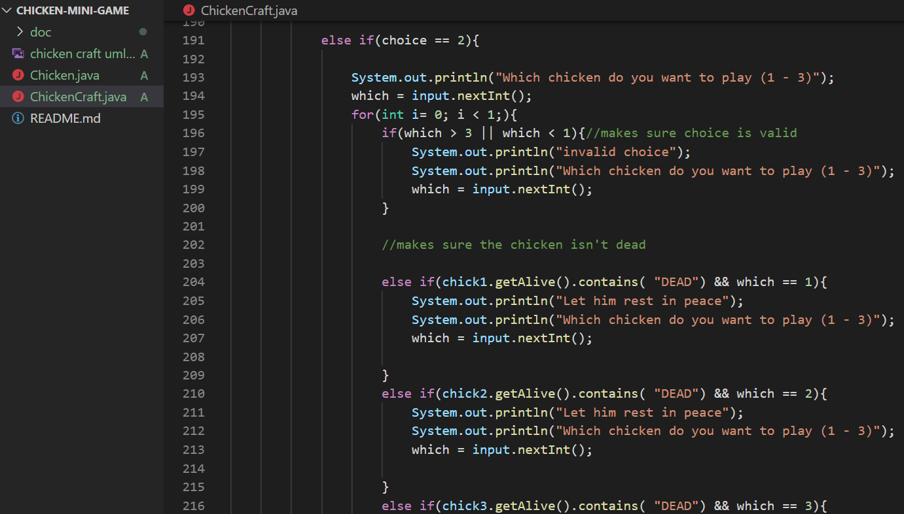
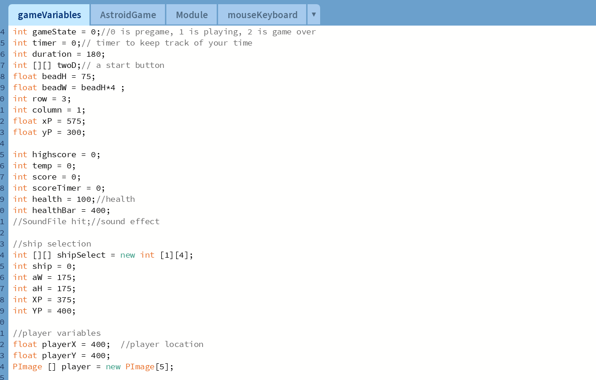

This is a chicken mini game. The game has three chickens with four different conditions. The conditions change depending on the actions performed. This project is an example of some of the object oriented programming I have done. The front end uses for loops to check so the user dosen't do anything that that might trap them on a screen or a choice that makes no sense (eg. feeding a chicken a negative amount).


This was my final project for my first java course. The game has a game menu has three options. You can chose your ship design, you can choose the help menu, or you can choose start. While dodging astriods you can pick up power ups and spend the points you earn on abilities such as teleporting, healing, and clearing the astriods around your ship. This project helped me get a better understanding on how to use graphics in processing.
